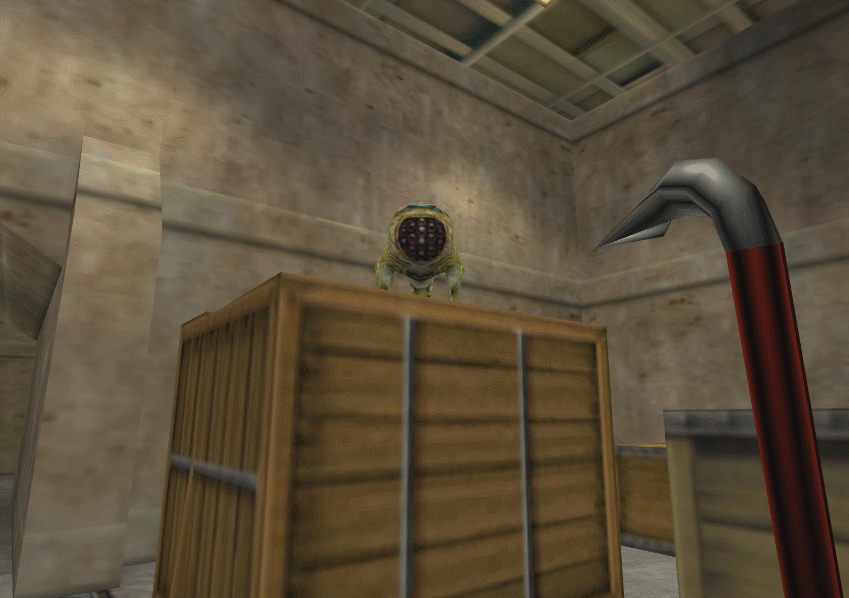

Half-Life
Publisher: Sierra On-Line (1998 Windows), Valve Corporation (2003 Windows, Mac, Linux)
Developer: Valve Corporation, Gearbox Software (PS2)
Platform: Windows, Mac, Linux, PlayStation 2
Year: 1998 (Windows), 2001 (PS2), 2013 (Mac, Linux)Happy 20th anniversary, Half-Life!